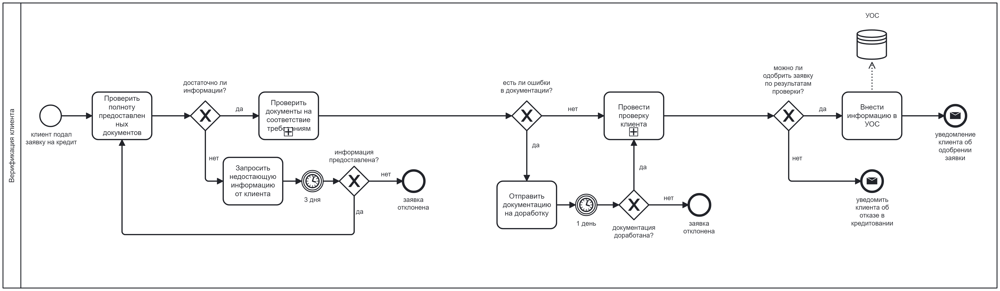
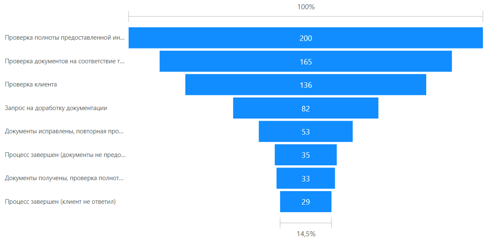
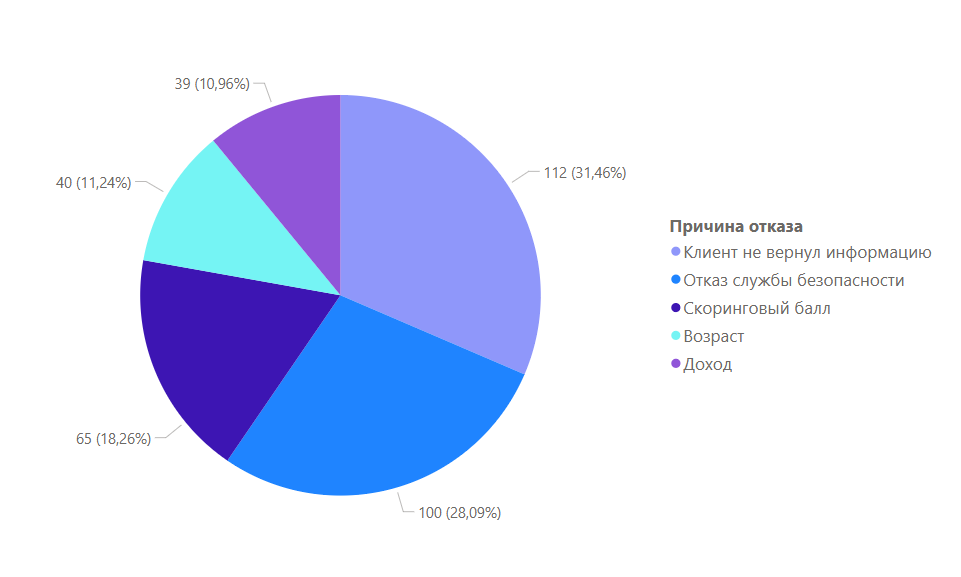

В кейсе проанализирован процесс "Верификация данных клиента (физ. лиц) в рамках процесса кредитования"
Инструментарий:
| Task&process mining | Интервьюирование стейкхолдеров |
| Описание AS-IS - TO-BE | Python (анализ данных) |
| Power BI | RACI-матрица |
| BPMN | RPA |
Цель: сократить затраты и время исполнения процесса
Результат: прогнозируемое сокращение затрат на 86,8%, сокращение времени - на 5300%
Примечание: в рамках проведения данного анализа не использовались реальные данные процессов в Банке (NDA и Сведения, составляющие банковскую тайну). Для данного анализа были синтезированы данные, приближенные к реальным процессам кредитования физических лиц (с помощью Python)
1. Введение
1.1. Цель анализа
Исследовать параметры процесса: скорость исполнения, стоимость/затраты процесса, результаты процесса (качество выходного продукта).
Проанализировать возможности оптимизации и автоматизации, улучшить параметры процесса.
1.2. Описание анализируемого процесса
Бизнес-процесс «Верификация данных клиента (физ. лицо) в рамках процесса кредитования» - составляющая часть блока процессов по кредитованию в Банке. Блок кредитования физических лиц является критичным для Банка, поскольку 30% прибыли, зарабатываемой в Банке, приходится на этот Блок.
Основное назначение процесса верификации – проверить данные клиента на соответствие их требованиям законодательства и внутренним требованиям Банка. На базе результатов проверки формируется решение об одобрении/отказе в кредитовании.
1.3. Источники информации
В рамках этапа подготовки к анализу и сбора информации:
2. Описание текущего процесса
2.1. Участники процесса
| Сотрудник | Роль | Департамент | Контактные данные |
|---|---|---|---|
| Директор департамента розничных продуктов | Владелец процесса | Департамент розничных продуктов (ДРП) | drp_coo@bank.com |
| Функциональный менеджер | Менеджер | Операционный офис | oo_manager@bank.com |
| Верификатор | Исполнитель | Операционный офис | oo_verify@bank.com |
| Сотрудник фронт-офиса | Исполнитель | Служба фронт-офиса | fo@bank.com |
| Сотрудник службы андеррайтинга | Исполнитель | Служба андеррайтинга | underwriting@bank.com |
| Сотрудник службы безопасности | Исполнитель | Служба безопасности | so@bank.com |
Заинтересованные стороны:
2.2. Этапы процесса
Процесс верификации физических лиц состоит из следующих этапов:
| Этап | Описание | Исполнитель | Срок |
|---|---|---|---|
| Проверка полноты предоставленной документации | Верификатор проверяет пакет документов: клиент должен предоставить скан паспорта и скан справки о доходах. Документы прикрепляются в Автоматизированную Информационную Систему (АИС), в которой Верификатор ведет всю деятельность по процессу | Верификатор | В течение получаса после подачи документов |
| Запрос недостающей информации | Если клиент предоставил неполный пакет документов или же сканы
документов недостаточно хорошего качества, чтобы разобрать необходимую информацию,
верификатор отправляет запрос недостающей информации:
|
Верификатор | После выявления недостающей информации. Срок предоставления недостающей информации – 3 дня. |
| Проверка документов на соответствие требованиям | Верификатор проверяет зрительно паспорт и справку о доходах на предмет несоответствия требованиям Банка и законодательства | Верификатор | В течение получаса после подачи документов |
| Запрос на доработку документации | Если в процессе проверки на соответствие требованиям были выявлены ошибки в документации, верификатор отправляет запрос на доработку:
|
Верификатор | После выявления ошибок в документации. Срок исправления – 1 день. |
| Проверка клиента | После подтверждения верификатором соответствия документации требованиям, информация о клиенте передается другим подразделениям Банка для проверки:
|
Служба андеррайтинга, Служба безопасности | Срок проведения проверки – 1 день |
| Уведомление об отказе | По результатам проверки, верификатор отправляет автоматически сформированное уведомление об отказе, если было вынесено соответствующее решение | Верификатор | Сразу после получения заключения от соответствующих служб |
| Внесение одобренной заявки на кредитование в учетно-операционную систему Банка | В случае, когда по результатам проверки было принято решение выдать клиенту кредит, верификатор вносит информацию о клиенте (личные данные, данные о его расчетном счете, размере одобренного кредита) в учетно-операционную систему Банка | Верификатор | Сразу после получения заключения от соответствующих служб |
| Уведомление об одобрении | Верификатор отправляет автоматически сформированное уведомление об одобрении, если было вынесено соответствующее решение | Верификатор | После внесения информации в учетно-операционную систему Банка |
Матрица распределения ответственности (RACI)
Этап |
Верификатор |
Менеджер |
Директор ДРП |
Сотрудники фронт-офиса |
Служба андеррайтинга |
Служба безопасности |
|---|---|---|---|---|---|---|
| Проверка полноты предоставленной документации | R | A | R | |||
| Запрос недостающей информации | R | A | R | |||
| Проверка документов на соответствие требованиям | R | A | ||||
| Запрос на доработку документации | R | A | R | |||
| Проверка клиента | R | A | R | R | ||
| Уведомление об отказе | R | A | CI | I | I | |
| Внесение одобренной заявки на кредитование в учетно-операционную систему Банка | R | A | ||||
| Уведомление об одобрении | R | A | I | I | I |
2.3. Графическое представление
2.4. Метрики процесса
| Метрика | Нормативный показатель | Фактический показатель |
|---|---|---|
| Время исполнения одного экземпляра процесса | Верификатор: 15 минут на 1 заявку (без учета времени на доработки документации) Служба андеррайтинга: 30 минут Служба безопасности: 60 минут Итого: 105 минут |
Верификатор: 7 минут на 1 заявку (без учета времени на доработки документации) Служба андеррайтинга: 12 минут Служба безопасности: 34 минуты Итого: 53 минуты (среднее значение) |
| Количество исполненных экземпляров процесса в день | 150 заявок на кредитование/день | ≈ 200 заявок на кредитование/день (скорректировано на пиковые значения сезонности) |
| Стоимость человеко-часов для одного экземпляра процесса | Общая стоимость человеко-часов одного экземпляра процесса: 10$ | Верификатор – 0,53$ Служба андеррайтинга – 0,91$ Служба безопасности – 3,09$ |
| % одобренных заявок | 95 | 10 (из выбранного сэмпла данных) |
Были проанализированы логи Автоматизированной Информационной Системы, в которой осуществляется процесс верификации данных. Ниже представлена конверсия прохождения этапов процесса (200 экземпляров)
А также представлена диаграмма распределения причин отказов клиентам в кредитовании
3. Выявленные проблемы и узкие места
3.1. Описание проблемных зон
1. Отсутствие систем мониторинга исполнения. Отсутствие системы фиксации ошибок сотрудников
2. Отсутствие системы передачи информации при отсутствии сотрудника на месте (сотрудник в отпуске/на больничном/уволился)
3. Узкие места процесса:
| Узкое место | Описание |
|---|---|
| Запрос недостающей информации | 17,5% от всех заявок отклоняются из-за того, что клиент не предоставляет недостающую информацию |
| Запрос на доработку документации | 41% от всех заявок отправляются на доработку предоставленной клиентом документации. Из этих заявок 35% отклоняются из-за того, что клиент не предоставил необходимую для доработки информацию |
4. Основные причины отказа в кредитовании:
| Причина отказа | Описание |
|---|---|
| Клиент не предоставил необходимую информацию | 31,46% от всех отклоненных заявок |
| Отказ службы безопасности | 28,09% от всех отклоненных заявок |
| Скоринговый балл | 18,26% от всех отклоненных заявок |
3.2. Причины проблем
| Проблема | Причины |
|---|---|
| Отсутствие систем мониторинга исполнения. Отсутствие системы фиксации ошибок сотрудников | Высокая загруженность менеджеров, у которых нет времени на дополнительные проверки этапа верификации. Отсутствие строгой регламентации процесса верификации со стороны регуляторов, поэтому Банк устанавливает порядок процесса и контрольные процедуры самостоятельно. В данном случае, контрольные процедуры были исключены. |
| Отсутствие системы передачи информации при отсутствии сотрудника на месте (сотрудник в отпуске/на больничном/уволился) | Существующие банковские инструменты коммуникации и электронного документооборота не позволяют (не удобны для использования) передавать текущую информацию по процессу. |
| 17,5% от всех заявок отклоняются из-за того, что клиент не предоставляет недостающую информацию | Предположительно, может быть связано со сложностью процедуры подачи информации, либо неэффективности работы клиентских менеджеров. Требуется дополнительный анализ. Возможно потребуется изменение UI/UX СДБО. |
| 41% от всех заявок отправляются на доработку предоставленной клиентом документации. Из этих заявок 35% отклоняются из-за того, что клиент не предоставил необходимую для доработки информацию. | Предположительно, может быть связано со сложностью процедуры подачи информации и оформлением заявки на кредитование, либо неэффективности работы клиентских менеджеров. Требуется дополнительный анализ. |
| Высокий процент отказа службы безопасности и по причине низкого скорингового балла. | Требуется дополнительный анализ для сравнения возможных упущенных выгод и присущих рисков. Требуется дополнительный анализ клиентской базы и предлагаемых продуктов кредитования. |
4. Рекомендации по улучшению процесса
4.1. Возможные решения
1. Автоматизация рутинных задач с помощью инструментов искусственного интеллекта.
Для автоматизации задач верификатора можно предложить внедрить RPA. Поскольку основное преимущество RPA – это взаимодействие с GUI, использование данной технологии представляется лучшим вариантом.
| Этап | Описание | Исполнитель |
|---|---|---|
| Проверка полноты предоставленной документации | Робот триггерится в момент появления заявки. Робот проверяет наличие в заявке обязательных документов. | RPA |
| Запрос недостающей информации | При недостаточности документации, робот отправляет автоматически сгенерированное письмо (заранее определенный шаблон) клиенту. При предоставлении информации, робот делает повторную проверку |
RPA |
| Проверка документов на соответствие требованиям | Робот (с помощью технологий OCR и ML) определяет, соответствуют ли предоставленные документы требованиям Банка и регуляторов. | RPA |
| Запрос на доработку документации | При необходимости, робот отправляет автоматически сгенерированное письмо (заранее определенный шаблон) клиенту. При предоставлении информации, робот делает повторную проверку. |
RPA |
| Проверка клиента | Без внедрения RPA | Служба андеррайтинга, Служба безопасности |
| Уведомление об отказе | В случае отказа робот отправляет автоматически сгенерированное письмо (заранее определенный шаблон) клиенту. | RPA |
| Внесение одобренной заявки на кредитование в учетно-операционную систему Банка | В случае одобрения заявки, робот переносит необходимые данные из клиентской документации, заключений служб безопасности и андеррайтинга, других банковских источников в учетно-операционную систему Банка. | RPA |
| Уведомление об одобрении | В случае одобрения на кредитование робот отправляет автоматически сгенерированное письмо (заранее определенный шаблон) клиенту. | RPA |
Таким образом, получится высвободить специалистов по верификации из процесса полностью.
Ниже в качестве примера создан образец автоматизации трех этапов (Проверка полноты предоставленной документации → Запрос недостающей информации → Проверка документов на соответствие требованиям) с помощью RPA (UiPath).
Новый подход к управлению процессом может выглядеть следующим образом:
2. Для проведения дополнительных мероприятий по оптимизации (напр., работы службы безопасности и службы андеррайтинга) требуется дополнительный анализ.
4.2. Ожидаемые результаты
| Ожидаемый результат | Комментарий |
|---|---|
| Сокращение времени на обработку 1 заявки | В среднем верификатор тратит 7 минут на обработку 1 заявки. При внедрении RPA исполнение 1 заявки (в зависимости от предоставленных мощностей) в среднем составит 10 секунд. Таким образом, экономия времени составит 5300%. |
| Затраты на обработку 1 заявки | В среднем, стоимость одного экземпляра процесса составляет 4,53$. Стоимость одного дня работы (200 заявок/день) - 906$.
Для автоматизации (с помощью UiPath, без привлечения внутренних специалистов) данного процесса потребуется (данные о стоимости взяты средние по рынку):
Таким образом, стоимость одного дня работы RPA (за первый год) составит - 120$. Здесь не учитываются дополнительные выгоды от повышения производительности и масштабирования использования RPA-решений в других процессах Банка. Экономия после автоматизации данного процесса составит: 786$ в день. Затраты снизятся на 86,8%. |
| Логирование всех действий робота | Поскольку все действия робота записываются в лог, эти данные можно будет использовать для дальнейшего анализа, установления метрик эффективности процесса и совершенствования процесса, что невозможно сделать сейчас при отсутствии системы мониторинга. |
4.3. Возможные риски внедрения
| Возможный риск | Мероприятия по минимизации риска |
|---|---|
| Проблемы интеграции (риск конфликта RPA с другими системами Банка) |
1. Определить, с какими системами и базами данных будет взаимодействовать RPA, какие данные использовать 2. Определить возможности интеграции (API, взаимодействие через GUI) 3. Определить сценарии работы в случае сбоев в работе RPA |
| Сопротивление сотрудников |
1. Определить, какая штатная численность может попасть под сокращение 2. Определить возможности перевода сотрудников на новые задачи, переобучения или повышения квалификации |
| Недостаточный контроль после внедрения RPA |
1. Создать систему мониторинга для нового процесса. Внедрить KPI 2. На первых этапах внедрения использовать модель human-in-the-loop, когда действия робота одобряются сотрудником-экспертом. В течение нескольких месяцев контроля обработается большинство ситуаций-исключений, которые необходимо вписать в алгоритм RPA |
| Юридические ограничения при использовании технологии RPA |
1. Проверить соответствие алгоритма требованиям законодательства персональных данных 2. Включить RPA в реестр средств обработки ПДн в Банке 3. Актуализировать внутренние документы (ЛПА, ВНД) 4. Провести аудит безопасности после внедрения 5. Обучить сотрудников ИБ и ИТ взаимодействию с RPA |
4.4. План внедрения
В данном кейсе в Банке уже существует Офис оптимизации процессов, который занимается в том числе и внедрением ИИ-инструментов для повышения эффективности процессов. Таким образом, Офис оптимизации процессов выступает исполнителем в данном проекте внедрения.
Предлагаемые этапы:
1. Определение заинтересованных лиц (владелец процессов, менеджеры процессов, верификаторы и другие работники Банка)
2. Расчет Cost-Benefit analysis/ROI по итогам проведенного анализа процесса.
3. Описание процесса TO-BE с использованием технологии RPA. Сбор и формализация требований к RPA-сценарию.
4. Проектирование тестового экземпляра процесса с помощью технологии RPA.
5. Тестирование на пилотной группе (ограниченном числе заявок на кредитование) и улучшение экземпляра процесса
6. Оценка трансформации кадрового состава и подготовка новых ролей для сотрудников. Обучение/перевод сотрудников, занятых на процессе
7. Полномасштабное внедрение RPA в процесс с полной заменой функционала сотрудников. Создание документации (регламенты/порядки/инструкции).
8. Оценка эффективности внедрения в течение 2-4 недель после внедрения, фиксация первых результатов.
Данный проект внедрения может занять от 2 недель до 1 месяца. Ответственными за проект назначаются владелец процесса и Офис оптимизации процессов.
something